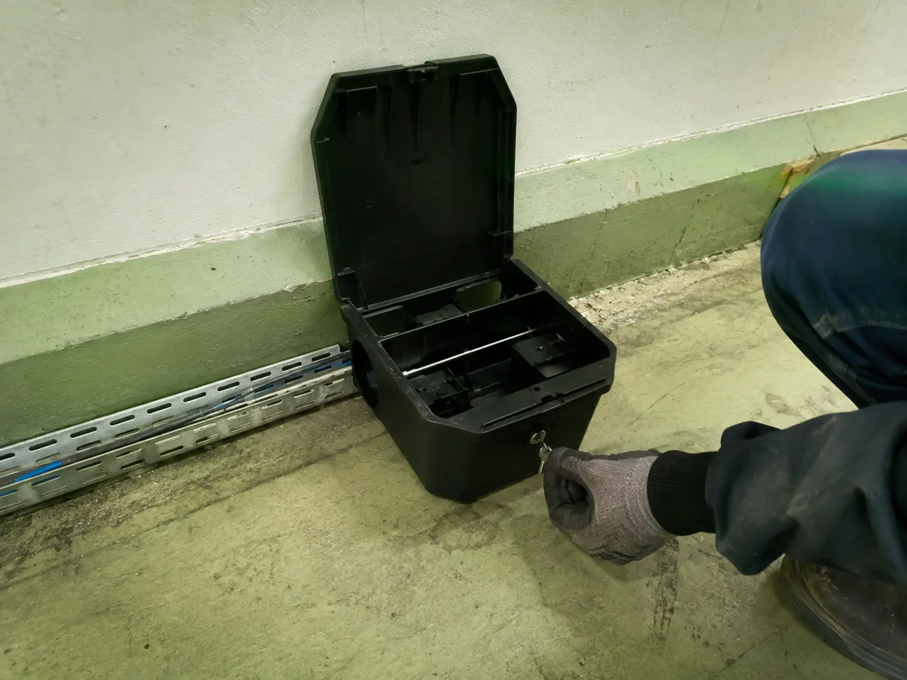
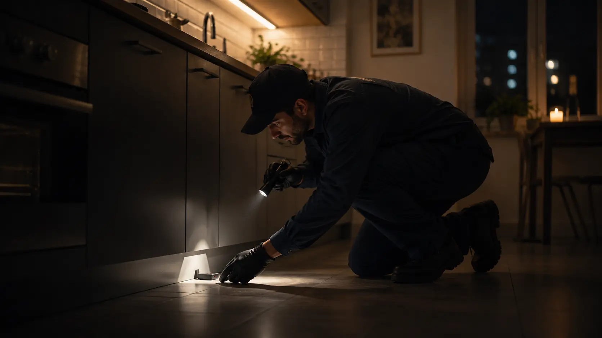

Rágásnyomok
Kábeleken, csővezetékeken, ajtókereteken és élelmiszeres dobozokon megjelenő friss, viszonylag nagy méretű rágásnyomok.
A-Leco Management Kft. — Budapest / Pest megye
Irtószeres, kutyás vagy görényes módszer — a helyszíni felmérés alapján javasoljuk azt, ami az Ön ingatlanához illik. Egérirtást is vállalunk, lakóingatlanban és üzleti helyszínen egyaránt.
Több irtási megoldás közül választunk, mindig a helyszínhez igazítva — Budapesten és Pest megyében. Egérirtást is vállalunk.
Patkány- és egérirtás
egy kézből, lakóingatlanban és üzleti helyszínen
Egy kézből, lakóingatlanban és üzleti helyszínen — Budapest és Pest megye teljes területén.
3 módszer
irtószeres védekezés, kutyás/görényes módszer és csapdázás — a helyszín és a fertőzöttség szerint választva
Budapest + Pest megye
a kiszolgált terület egységesen
SOS kiszállás
sürgős esetben is hívható, felár ellenében
Egy pár patkány néhány hónap alatt akár több tucat egyedre szaporodhat, és a kár is nő a vezetékekben, a szigetelésben, a raktározott árukban. Minél előbb lép, jellemzően annál egyszerűbb és olcsóbb a megoldás.
A legtöbb esetben nem magát az állatot látjuk meg elsőként, hanem a nyomait. Ha az alábbiak közül bármelyikre ráismer a lakása, kertje vagy telephelye körül, érdemes mielőbb szakembert hívni.
Kábeleken, csővezetékeken, ajtókereteken és élelmiszeres dobozokon megjelenő friss, viszonylag nagy méretű rágásnyomok.
Orsó alakú, ujjbegynyi ürülékszemcsék pince, csatornaakna, udvar vagy raktár mentén.
Kaparás, futkosás a falban, a padló alatt vagy a csatornarendszer felől, jellemzően este és éjszaka.
Frissen ásott, ökölnyi bejáratú üregek épület mellett, kertben vagy komposztáló környékén.


A patkány nagyobb testű és óvatosabb, mint az egér, épületszerkezetben és vezetékekben komoly kárt tud okozni, és jelenléte higiéniai kockázattal is jár. Csatornahálózat, udvar, kert, ipari telephely, komposztáló és hulladéktároló környékén a leggyakoribb a fertőzöttség.
Hogyan zajlik a felmérés: a helyszínen azonosítjuk a járatokat, a bejutási pontokat és a fertőzöttség mértékét, majd ez alapján javasoljuk a megfelelő megoldást — irtószeres etetőláda-hálózatot, csapdázást, vagy megfelelő helyszíni adottságok esetén kutyás/görényes módszert.

Így néz ki a zárt, jelölt biztonsági etetőláda, amelybe az irtószer kerül — gyermekek és háziállatok nem férnek hozzá.
A görény bejut a patkányok föld alatti járat- és üregrendszerébe; jelenléte és mozgása a rejtekhelyekről a felszínre hajthatja a kifejlett patkányokat, amelyek kezelésében a kiképzett kutya vesz részt. A járatban vagy a fészek közelében maradó egyedekkel szemben a görény közvetlenül is felléphet. Ez a módszer nem alkalmazható minden helyszínen — bevetését mindig a terület adottságai határozzák meg, és elsősorban a megfelelő kültéri, kiterjedt járatrendszerrel érintett fertőzöttségnél lehet releváns, Budapest területén.


A végleges ár a fertőzöttség mértékétől, a terület méretétől és a helyszíni, illetve műszaki adottságoktól (megközelíthetőség, üregrendszer kiterjedtsége) függ — ezért mindig a felmérés után adunk pontos ajánlatot.
Az egér kisebb, mint a patkány, de ugyanolyan gyorsan elszaporodik, és jellemzően nehezebben észrevehető. A tipikus jelek: apró, rizsszem méretű ürülékszemcsék konyhaszekrényben vagy kamrában, finom rágásnyomok élelmiszeres csomagoláson és vezetékeken, halk motoszkálás a falban vagy az álmennyezet felett.
Az egér a legapróbb réseken is bejut — nyílászárók, szellőzők, csővezetékek körüli tömítetlen pontokon keresztül. A kezelést mindig a helyszíni adottságok — az ingatlan típusa, a bejutási pontok száma, a fertőzöttség mértéke — alapján tervezzük meg, lakásban, családi házban, társasházban és üzleti ingatlanban egyaránt.

Áttekintés
Telefonon vagy az ajánlatkérő űrlapon jelzi a problémát, és röviden leírja a helyszínt.
Szakemberünk felméri a területet, a bejutási pontokat és a fertőzöttség mértékét.
A felmérés alapján a helyszínhez és a fertőzöttség mértékéhez illő módszert alkalmazzuk.
A garancia feltételeitől függően visszatérünk, hogy megbizonyosodjunk az eredményről.
Az alábbi árak induló, tájékoztató jellegű összegek. A pontos ajánlatot a helyszíni felmérés után adjuk meg, a terület mérete és a fertőzöttség mértéke alapján.
Ha a probléma nem várhat a következő szabad időpontig, két sürgősségi szolgáltatás közül választhat. A kiszállás időpontját telefonos egyeztetéskor tudjuk pontosan megmondani.
70 000 Ft
Soron kívüli, sürgősségi kiszállás, amikor a probléma gyors beavatkozást igényel és nem fér bele a szokásos beosztásba.
SOS segítséget kérek75 000 Ft
Amikor egy-egy patkány váratlanul, egyedileg jut be egy ingatlanba — például kertben tartott baromfi közelébe, társasházi pincébe, lépcsőházba, vagy bármely más helyszínre —, gyors és célzott beavatkozásra van szükség.
SOS segítséget kérekA pontos kiérkezési időt minden esetben telefonos egyeztetéskor mondjuk meg — ez a helyszíntől és az aktuális leterheltségtől függ.
Rendszeresen dolgozunk üzleti és közösségi ingatlanokkal, ahol a patkány- vagy egérprobléma több lakót, munkatársat vagy vendéget is érint.
A társasházi munkák terjedelme ingatlanonként jelentősen eltér — a lépcsőházak, pincék és udvarok száma és állapota alapján mindig egyedi felmérést és ajánlatot adunk.
50 000–60 000 Ft-tól, irányár — a végleges díjat a helyszín (épületek száma, pincék, udvar) alapján határozzuk meg.
Egyedi ajánlat — keressen bizalommal. A kártevőmentesítés ütemezését és dokumentációját a helyszín és az Önök folyamatai alapján egyeztetjük.
A garancia lehetősége és a pontos feltételei nem egységesek — ezeket a fertőzöttség mértéke, a helyszíni és műszaki adottságok, valamint az elvégzett munka jellege határozza meg.
A konkrét feltételeket a helyszíni felmérés vagy a munka elvégzése után, az adott ingatlan és probléma ismeretében adjuk meg, írásban is.
A garanciális feltételektől függően visszatérünk, hogy ellenőrizzük az eredményt.
Minden elvégzett munkáról hivatalos számlát állítunk ki.
Kizárólag professzionális, jogszerűen forgalmazott készítményeket használunk.
Kérésre jelöletlen megjelenéssel, visszafogott kommunikációval dolgozunk.
Ha nem patkányról vagy egérről van szó, írja meg az ajánlatkérő űrlapon, milyen kártevővel találkozott — visszajelzünk, tudunk-e segíteni.
Az alapár 39 000 Ft-tól indul, ez 3 db irtószeres etetőláda kihelyezését tartalmazza. A végleges ár a helyszín adottságaitól, méretétől és a fertőzöttség mértékétől függ.
3 db zárt, jelölt irtószeres etetőláda kihelyezését és feltöltését. Nagyobb terület vagy erősebb fertőzöttség esetén ennél több ládára és munkára lehet szükség — ezt a felmérés után pontosan megmondjuk.
Budapesten 15 000 Ft, Pest megyében 25 000 Ft-tól — itt a díj a kiszállási távolságtól is függ.
Igen, Budapest mellett Pest megyében is vállalunk munkát.
Igen. SOS kiszállás 70 000 Ft, SOS besurranó patkányirtás — például kertben tartott baromfi közelébe vagy társasházba váratlanul bejutott, egyedi patkány esetén — 75 000 Ft.
A fertőzöttség mértékétől, a helyszíni adottságoktól és az elvégzett munka jellegétől — a pontos feltételeket a helyszín ismeretében adjuk meg.
Igen, társasházi megbízásoknál az irányár 50 000–60 000 Ft-tól indul, a pontos díjat a helyszín alapján adjuk meg.
Igen, lakóingatlanban, társasházban és üzleti ingatlanban egyaránt, 34 000 Ft-tól induló árral. A végleges díjat a helyszíni felmérés alapján adjuk meg.
Hívjon minket telefonon, vagy töltse ki az alábbi ajánlatkérő űrlapot — rövid időn belül visszahívjuk.
Töltse ki az űrlapot, és rövid időn belül visszahívjuk — vagy hívjon minket most, ha sürgős.
Hívjon most, vagy kérjen ajánlatot — Budapesten és Pest megyében is rövid időn belül tudunk időpontot egyeztetni.